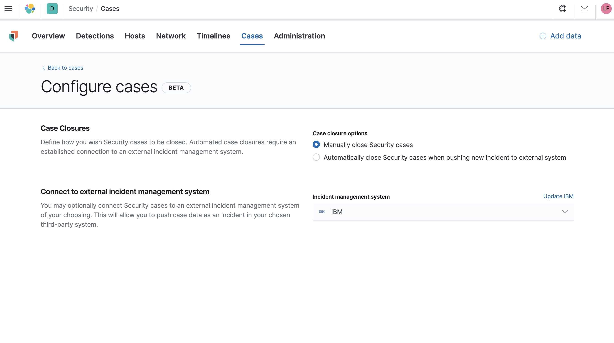

Configuring external connectionsedit
You can push Elastic Security cases to these third-party systems:
- ServiceNow
- Jira (including Jira Service Desk)
- IBM Resilient
To push cases, you need to create a connector, which stores the information required to interface with an external system.
After you have created a connector, you can set Elastic Security cases to automatically close when they are sent to external systems.
To create connectors and send cases to external systems, you need the appropriate license.
Create a new connectoredit
-
Go to Security → Cases → Edit external connection.
 -
From the
Incident management systemlist, selectAdd new connector. -
Select one of these:
- ServiceNow: To send cases to ServiceNow
- Jira: To send cases to Jira or Jira Service Desk
- IBM Resilient: To send cases to IBM Resilient
-
Fill in the following:
- Connector name: A name for the connector.
- URL: The URL of the external system to which you want to send cases.
- Organization ID (IBM Resilient connectors only): Your organization’s IBM Resilient ID number.
- Username (ServiceNow connectors only): The username of the ServiceNow account used to access the ServiceNow instance.
- Password (ServiceNow connectors only): The password of the ServiceNow account used to access the ServiceNow instance.
- Project key (Jira connectors only): The key of the Jira project to which you are sending cases.
- Email or Username (Jira connectors only): The Jira account’s username or email address.
- API token or Password (Jira connectors only): The API token or password used to authenticate Jira updates.
- API key ID (IBM Resilient connectors only): The API key used to authenticate IBM Resilient updates.
- API key secret (IBM Resilient connectors only): The API key secret used to authenticate IBM Resilient updates.
- Save the connector.
To represent an Elastic Security case in an external system, Elastic Security case fields are mapped as follows:
-
For ServiceNow incidents:
-
Title: Mapped to the ServiceNowShort descriptionfield. When an update to a Security case title is sent to ServiceNow, the existing ServiceNowShort descriptionfield is overwritten. -
Description: Mapped to the ServiceNowDescriptionfield. When an update to a Security case description is sent to ServiceNow, the existing ServiceNowDescriptionfield is overwritten. -
Comments: Mapped to the ServiceNowCommentsfield. When a comment is updated in a Security case, a new comment is added to the ServiceNow incident.
-
-
For Jira issues:
-
Title: Mapped to the JiraSummaryfield. When an update to a Security case title is sent to Jira, the existing JiraSummaryfield is overwritten. -
Description: Mapped to the JiraDescriptionfield. When an update to a Security case description is sent to Jira, the existing JiraDescriptionfield is overwritten. -
Comments: Mapped to the JiraCommentsfield. When a comment is updated in a Security case, a new comment is added to the Jira incident.
-
-
For IBM Resilient issues:
-
Title: Mapped to the IBM ResilientNamefield. When an update to a Security case title is sent to IBM Resilient, the existing IBM ResilientNamefield is overwritten. -
Description: Mapped to the IBM ResilientDescriptionfield. When an update to a Security case description is sent to IBM Resilient, the existing IBM ResilientDescriptionfield is overwritten. -
Comments: Mapped to the IBM ResilientCommentsfield. When a comment is updated in a Security case, a new comment is added to the IBM Resilient incident.
-
Close sent cases automaticallyedit
To close cases when they are sent to an external system, select Automatically close Security cases when pushing new incident to external system.
Change and update connectorsedit
You can create additional connectors, update existing connectors, and change the connector used to send cases to external systems.
You can also configure which connector is used for each case individually (see Open a new case).
-
To change the default connector used to send cases to external systems:
- Go to Security → Cases → Edit external connection.
-
Select the required connector from the
Incident management systemlist.
-
To update an existing connector:
-
Click
Update <connector name>. - Update the connector fields as required.
-
Click